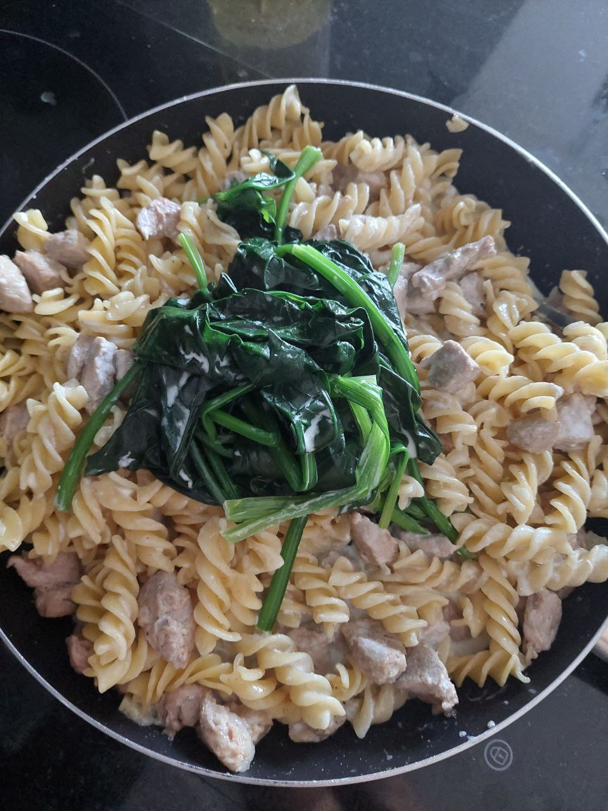

Description
Ingredients:
- 250g pasta (e.g., fettuccine, penne)
- 2 chicken breasts, sliced
- 1 tablespoon olive oil
- 2 cloves garlic, minced
- 1 cup heavy cream
- 1/2 cup grated Parmesan cheese
- Salt and pepper to taste
- Fresh spinach leaves, washed and boiled
Steps:
- Cook Pasta: Cook the pasta according to the package instructions until al dente. Drain and set aside.
- Cook Chicken: In a skillet, heat olive oil over medium heat. Add sliced chicken breasts and cook until browned and cooked through, about 5-6 minutes per side. Remove chicken from the skillet and set aside.
- Make Sauce: In the same skillet, add minced garlic and sauté for 1-2 minutes until fragrant. Pour in the heavy cream and bring to a simmer. Stir in grated Parmesan cheese until melted and the sauce thickens slightly. Season with salt and pepper to taste.
- Combine: Add the cooked pasta to the skillet with the sauce and toss until well coated. Add the cooked chicken slices and stir to combine.
- Serve: Divide the creamy pasta with chicken among serving plates. Top each serving with boiled spinach leaves. Optionally, garnish with additional Parmesan cheese and freshly ground black pepper.